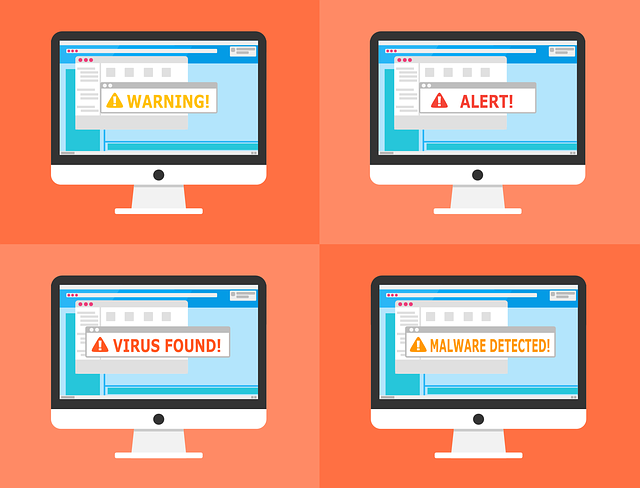
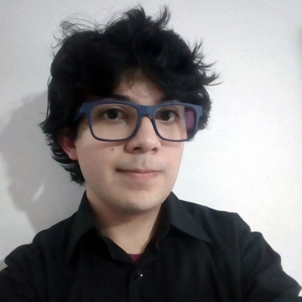

Arquitectura de Servicios Tecnológicos
Busca apoyar a la Dirección de Tecnologías y Sistemas de la Información o a quien haga sus veces con lineamientos y estándares orientados a la definición y diseño de la Arquitectura de la infraestructura tecnológica que se requiere para soportar los Sistemas de Información y el portafolio de servicios.
Operación de Servicios Tecnológicos
Busca estructurar e implementar los procesos de operación, monitoreo y supervisión de los Servicios Tecnológicos. Quiero más información...Gestión de la calidad y seguridad de los Servicios Tecnológicos
Busca la definición y gestión de los controles y mecanismos para alcanzar los niveles requeridos de seguridad y trazabilidad de los Servicios Tecnológicos.
Quiero más información...3. Noticias - Juan
Alejandro Díaz Moscoso
Domicilio: Armenia, Quindío
Estudios: Este joven de 27 años es químico de la Universidad del Quindío, y Magíster en Ciencias-Química de la Universidad de los Andes.
Pasatiempos:
Post-pandemia:

Juan Sebastián Rey Lancheros
Domicilio: Bogotá D.C.
Estudios: Este joven de 22 años es físico de la Universidad Nacional de Colombia.
Pasatiempos:
Martha Isabel Betancourt Castañeda
Domicilio: Popayán, Cauca
Estudios: Esta joven es ingeniera de sistemas de la Corporación universitaria Remington.
Pasatiempos:
Datos curiosos: Es una persona activa, trabajadora y siempre le pone la mejor actitud a cada situación que se le presenta. Actualmente trabaja de noche por lo que valora mucho la oportunidad de estudiar en el día.
E-mail: marticaisa4@gmail.com